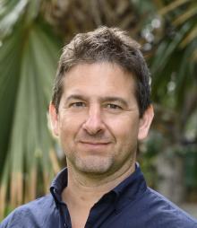
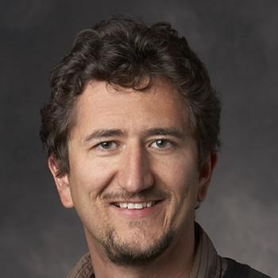
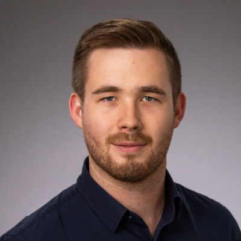
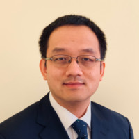
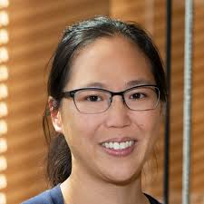
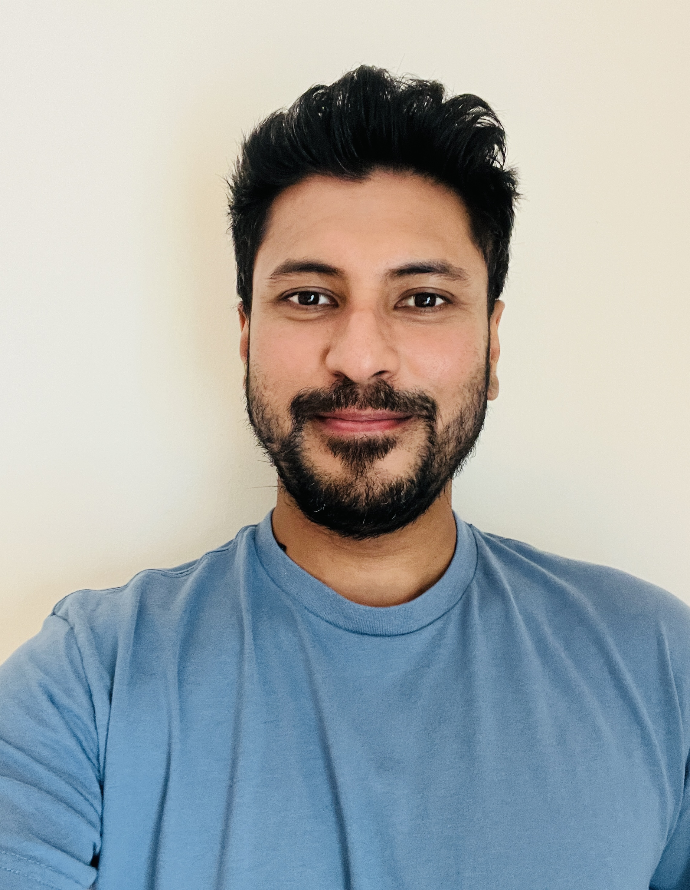

Invited Speakers
Talk Title: NOVA: Scalable Vision Foundation Model for Organellome-Wide Phenotyping of Human Neurons
Start Time: 8:40 AM CDTSpeaker: Eran Hornstein, Professor, Weizmann institute of science

Talk Title: Multi-modal modeling in precision medicine: from data imputation to synthetic data
Start Time: 10:30 AM CDTSpeaker: Olivier Gevaert, Associate Professor, Stanford University

Abstract: Missing data presents a persistent challenge in biomedical research. Data imputation techniques have evolved from single-modality approaches to multi-modal approaches, which show great promise for imputing one modality based on the availability of another. Recent advancements in large, pre-trained artificial intelligence (AI) models, known as foundation models, offer even more powerful solutions for data imputation. We introduce the concept of cross-modal data modeling, a methodology harnessing foundation models to impute missing data and also generate realistic synthetic samples. Multi-modal modeling empowers researchers to model complex interactions among diverse biomedical data types, including omics and imaging. This approach can illuminate how one modality influences another, facilitating in-silico exploration of disease mechanisms without the need for extensive and costly real-world data collection. We highlight ongoing efforts in multi-modal modeling in spatial omics, digital pathology and radiology, and anticipate its substantial contributions to understanding disease biology and enhancing healthcare practices.
Speaker Bio: Dr. Olivier Gevaert is an associate professor at Stanford University focusing on developing machine-learning methods for biomedical decision support from multi-scale data. He is an electrical engineer by training with additional training in artificial intelligence, and a PhD in bioinformatics at the University of Leuven, Belgium. He continued his work as a postdoc in radiology at Stanford and then established his lab in the department of medicine in biomedical informatics. The Gevaert lab focuses on multi-scale biomedical data fusion primarily in oncology and neuroscience. The lab develops machine learning methods including Bayesian, kernel methods, regularized regression and deep learning to integrate molecular data or omics. The lab also investigates linking omics data with cellular and tissue data in the context of computational pathology, imaging genomics & radiogenomics. Dr. Gevaert joined BMIR in 2015 as an Assistant Professor of Medicine.Talk Title: Interpretable-Through-Embeddings: Vision Transformers for Drug-Induced Toxicity and Mechanism Prediction
Start Time: 16:20 CDTSpeaker: Alex Beatson, Ph.D., Axiom Bio


Talk Title: Learning Multi-Modal Tissue Representations via Enhanced Spatial Barcoding and Sequencing
Start Time: 8:40 AM PDTSpeaker: Michelle Chan, Assistant Professor, Princeton University

Abstract:Comprehensive tissue profiling requires robust tools capable of capturing diverse genomic modalities in situ. Due to the design of the microfluidic-based Deterministic Barcoding in Tissue for spatial omics sequencing (DBiT-seq), it is particularly well suited for extension to multimodal profiling. We have improved DBiT-seq transcriptomic capture by ~2-fold and are now extending the technology for simultaneous profiling of other modalities. Two examples I will describe are targeted genotyping and lineage recording. Together, these optimized platforms form a versatile, multi-omic toolkit, significantly expanding our ability to dissect complex cellular heterogeneity, genetic variation, and gene regulation in native tissue architectures.
Speaker Bio: Michelle Chan is an Assistant Professor at the Lewis- Sigler Institute and Molecular Biology at Princeton University. She earned her B.Sc. in Computer Science and Microbiology at UBC. Her graduate work in computational biology at MIT in Aviv Regev’s lab centered on epigenetic regulation during embryogenesis. As a LSRF fellow in Jonathan Weissman's lab at UCSF, she developed a CRISPR- Cas9 molecular recorder. The Chan lab integrates computational and experimental methods to characterize the mammalian cell fate map with a focus on understanding how robustness is encoded in development. Michelle is a recipient of the 2022 NIH Director’s New Innovator Award.
Speaker Bio: Vivek Gopal Ramaswamy is a Senior Software Engineer at the Gladstone Institutes, where he develops next-generation AI systems at the intersection of computer vision, robotics and biomedical research. His work focuses on building biology-specific foundational models that classify, track, and predict cell fate, and on creating generative-AI–based vision tools to uncover novel cellular and brain-tissue phenotypes. By integrating these phenotypes with transcriptomic data, his research advances multimodal foundation models for precision medicine. He has expertise in designing intelligent imaging systems that integrate AI with robotic control, precision motor calibration, and adaptive feedback to enable autonomous and dynamic experimentation. He also leads efforts in scalable image-analysis pipelines capable of processing thousands of whole-slide images using distributed frameworks such as Docker, Kafka, and Kubernetes. His deep learning research spans multi-scale CNNs, Vision Transformers, and multimodal foundation models trained with techniques such as QLoRA and contrastive learning. Across his work, Vivek bridges AI, imaging, and biology to build intelligent, scalable systems accelerating discovery in neuroscience and disease pathology.